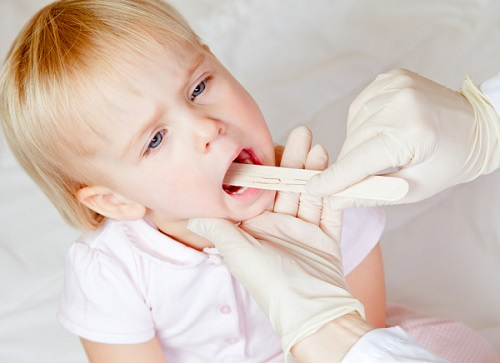
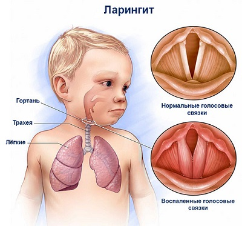
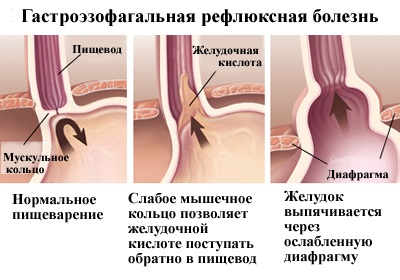

Хриплый голос у ребенка может вызывать беспокойство родителей, особенно если он может говорить только шепотом. Существуют несколько причин охриплости; некоторые из них потенциально опасны, в то время как другие являются простым неудобством. Вот краткое руководство, которое поможет вам определить причину охриплости голоса у ребенка.
ПРИЧИНЫ
Круп. Это одна из самых частых причин охриплости голоса. Круп вызывается вирусом и обычно протекает с лихорадкой, сопровождающейся лающим кашлем, похожим на звуки, издаваемые морским львом. Стридор (судорожный громкий звук, издаваемый ребенком при дыхании) является признаком серьезного крупа.
Ларингит. Похож на круп, но без сильного лающего кашля или стридора. Он обычно вызывается вирусной инфекцией верхних дыхательных путей.

Абсцесс миндалин. Это заболевание скорее вызовет более «приглушенный» голос, чем охриплость. Оно часто сопровождается лихорадкой и ангиной, при этом у ребенка будет классический голос «горячей картошки» — что означает, что его голос будет звучать так, будто он только что откусил кусочек слишком горячей картошки. Это потенциально серьезная инфекция — позвоните врачу.
Трахеомаляция. Это заболевание встречается у младенцев. Оно вызвано мягкостью дыхательных путей: хрящ, окружающий дыхательное горло, может становиться мягче, чем положено, из-за чего дыхательные пути местами сужаются. У некоторых детей это является нормальной особенностью развития. На самом деле это вызывает не охриплость голоса, а скорее прерывистое скрежещущее дыхание, когда младенец лежит на спине или волнуется. Шум обычно прекращается, когда ребенок переворачивается, принимает сидячее положение или успокаивается. Ваш малыш перерастет эту проблему, но вы должны рассказать об этом врачу во время очередного визита.
Аллергии. Охриплость часто ассоциируется с другими типичными симптомами аллергии, как зуд в глазах, носу или горле. При аллергии не должно быть лихорадки.
Гастроэзофагальная рефлюксная болезнь (ГЭРБ). Поднявшееся кислое желудочное содержимое может осесть на голосовых связках, вызывая воспаление или утолщение их, что приводит к охриплости. На ГЭРБ укажет охриплость по утрам и ее уменьшение днем, поскольку рефлюкс происходит по большей части ночью.

Перенапряженный голос. Эта проблема чаще всего встречается у участников групп поддержки спортивных команд, спортивных фанатов и певцов и вызвана чрезмерным использованием голосовых связок. Охриплость голоса обычно может продлиться от 1 до 2 недель.
Узелки на голосовых связках. Это самая распространенная причина постоянного хриплого голоса у малышей до 3 лет, детей и подростков. Это мягкие доброкачественные полипы, также называемые «узелки крикунов» и «узелки певцов», которые вырастают на голосовых связках, из-за чего их вибрация замедляется и тембр голоса становится ниже. Они практически всегда появляются из-за чрезмерного напряжения голосовых связок, как правило, у детей дошкольного возраста, проходящих «крикливую» стадию развития. Эти утолщения обычно исчезают через несколько лет, одновременно с этим голос смягчается. Они редко доставляют беспокойство ребенку, зато часто волнуют родителей.
ДОМАШНИЕ СРЕДСТВА
Следующие средства могут помочь вашему ребенку, если охриплость вызвана просто перенапряженным голосом или ларингитом:
ЛЕЧЕНИЕ УЗЕЛКОВЫХ УТОЛЩЕНИЙ ГОЛОСОВЫХ СВЯЗОК
Если охриплость голоса у вашего ребенка не проходит в течение нескольких недель при применении описанных выше методов лечения, значит, у него могли появиться хронические узелковые утолщения. Вот что мы советуем:
Тренировка голоса. У логопеда можно пройти курс профессиональной тренировки голоса, что поможет вашему ребенку научиться говорить без излишнего напряжения голосовых связок. Через несколько месяцев такого осторожного использования узелковые утолщения на связках могут уменьшиться.
Когда обращаться к врачу
|
Обследование у отоларинголога. Если охриплость длится дольше нескольких месяцев, вы должны отвести своего ребенка на обследование к отоларингологу. Он может использовать некоторые специальные инструменты для осмотра голосовых связок, чтобы определить размер и серьезность узелковых утолщений. В сложных случаях, возможно, потребуется хирургическая коррекция.
Здоровье ребенка от докторов Сирс / Сирс У. и др.